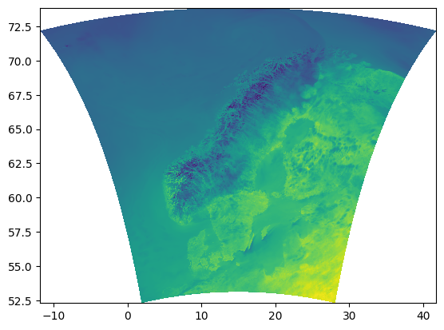
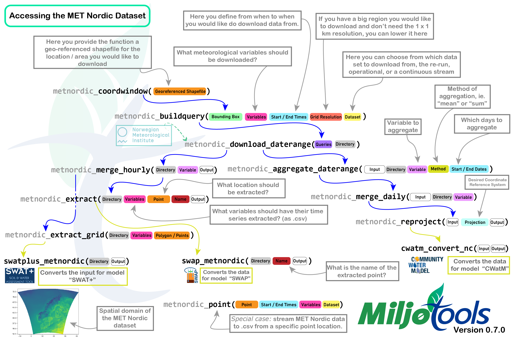

Author: Moritz Shore (moritz.shore@nibio.no)
Date: October, 2023
Last Update: October, 2025
Introduction
Tip: check server status if issues with downloading exist: https://status.met.no/
The MET Nordic Reanalysis Data set is a reanalysis product from the
Meteorologisk institutt. You can read
more about the data set here. The MET Nordic rerun archive and
operational dataset can be accessed using dedicated functions in
miljotools. Please inform yourself on the benefits and
limitations of reanalysis data before applying this data set to your
needs.

Figure 1: The spatial domain of the reanalysis dataset. (SOURCE: MET Nordic)
Specs
1x1 km grid covering the Nordics (see Figure 1.)
Hourly resolution from 2012-09-01 to TODAY
Variables: temperature, precipitation, relative humidity, wind speed, wind direction, air pressure, cloud area fraction, short+long-wave radiation (down-welling), land area fraction, and altitude.
Input
To access the data for a specific region of the Nordics, you need to provide the following as input:
A path to a georeferenced shapefile of the desired area
A directory where you would like to save the data (
A starting date and time
An ending date and time
Optionally, you can pass additional parameters to buffer your shapefile, choose your variables, choose your resolution, or to preview the data you are downloading.
Overview
The following figure shows a flowchart of how the different functions fit together, along with some explanation of the parameters.

Figure 2: Overview of all the metnordic functions. You can
download a full version of the image here
{kind=link}
The following will show you how to use these functions, but first the required libraries need to be loaded for this example workflow:
Coordinate Window
To start, one needs to determine which grid cells of the dataset need
to be downloaded. this can be done with metnordic_coordwindow().
This function requires which requires us to pass a geo-referenced
shapefile of our area of interest.
The geometry of the shapefile can be either polygon or
point , and can either be the path to the file
(including sidecar
files) or an sf object in the R environment. Here is an
example:
(By the way, these files are publicly available, so you can try this code yourself)
# downloading example files:
download.file(url = "https://gitlab.nibio.no/moritzshore/example-files/-/raw/main/MetNoReanalysisV3/cs10point.zip", destfile = "cs10point.zip")
download.file(url = "https://gitlab.nibio.no/moritzshore/example-files/-/raw/main/MetNoReanalysisV3/cs10_basin.zip", destfile = "cs10_basin.zip")
unzip("cs10point.zip")
unzip("cs10_basin.zip")
cs10_basin = "cs10_basin/cs10_basin.shp"
cs10_point = "cs10point/cs10point.shp"
example_polygon_geometry <- read_sf(cs10_basin)
example_point_geometry <- read_sf(cs10_point)
map1 <- mapview(example_polygon_geometry, alpha.regions = .3, legend = F)
map2 <- mapview(example_point_geometry, col.regions = "orange", legend = F)
map1+map2Now, with our geometries loaded, we can create coordinate windows for them. We will also buffer our polygon shapefile to ensure full coverage.
coord_window_poly <- metnordic_coordwindow(example_polygon_geometry, area_buffer = 1500)
coord_window_point <- metnordic_coordwindow(example_point_geometry)This gives us a list containing the minimum and maximum x and y cells
to download the data from. metadist is NA for polygon
geometries.
The metadist entry is only needed for point geometry and
indicates the distance to the nearest data set grid cell. Of course, for
this geometry there are only two coordinates:
Build Query
With our grid-cells set, we can build the queries that we would like to download from the server. For that we also need to decide the following:
-
mn_variablesare the meteorological variables to be downloaded, these are defined here. -
fromdateandtodateare time stamps for the period you would like to download. Make sure to follow the formatting requirements. -
grid_resolutionis the resolution at which the area will be downloaded. For very large regions where a dense network of grid cells is not needed, this parameter can be used. A setting of3for example, will download data from every 3rd cell in the grid, in both x and y directions. -
datasetdetermines the data source. Classic would be setting this to “reanalysis”, which is only the re-run archive, and covers approximately 2012-2022. The “operational” data set is also a reanalysis product, and covers the time period approximately between 2018-TODAY. Probably the most useful setting is “continuous” which uses the re-run archive where ever possible, and then switches to the operational data set once the re-run ends. You can read more about this here.
Determining our settings:
my_variables =c(
"air_temperature_2m",
"relative_humidity_2m",
"wind_speed_10m",
"integral_of_surface_downwelling_shortwave_flux_in_air_wrt_time",
"precipitation_amount"
)
start = "2019-06-01 00:00:00"
end = "2019-06-03 00:00:00"
queries_poly <- metnordic_buildquery(bounding_coords = coord_window_poly,
mn_variables = my_variables,
fromdate = start, todate = end,
grid_resolution = 1, dataset = "continuous")And for point geometry:
queries_point <- metnordic_buildquery(bounding_coords = coord_window_point,
mn_variables = my_variables,
fromdate = start, todate = end,
grid_resolution = 1, dataset = "continuous")We now have the files we want to download:
And the OPenDaP download urls: (just one as an example,
as they are very long).
queries_poly$full_urls[1]“metpparchivev3” indicates this comes from the re-run archive. if it were to say “metpparchive” only, that would indicate that it comes from the operational archive!
Download
Now we are ready to download the files. Lets download 14:00 as it rained at that time, a bit:
poly_path <- "indiv_poly/"
dir.create(poly_path, showWarnings = F)
fps <- metnordic_download(url = queries_poly$full_urls[15],
outdir = poly_path,
vars = my_variables, verbose = F)
(fps[[1]] %>% terra::rast())[[1]] %>% plot()Please note, the downloaded files are separated per variable. Why? Because the project this code was designed for needed the files like that. Also, these files get very big very quickly, so having per-variable separation can sometimes be useful.
Download a Date Range
Now of course, you would like to download not just one file, but the whole date range, the following function allows you to do this.
dl_path = metnordic_download_daterange(
queries = queries_poly,
directory = poly_path,
mn_variables = my_variables)
list.files(dl_path) %>% head()Downloading from Point Geometry
Please note! metnordic_download() and
metnordic_download_daterange() do not work for point
geometries. You’re meant to extract from downloaded .nc files using
point locations. But, if you really don’t want to do that, you can use
the metnordic_point() function:
point_path <- "indiv_point/"
dir.create(point_path, showWarnings = F)
point_dl_path <- metnordic_point(
area = example_point_geometry,
path = point_path,
fromdate = start,
todate = end,
mn_variables = my_variables,
verbose = F)
# Viewing the data:
data <- read_csv("indiv_point/METNORDIC_point.csv", show_col_types = F)
plot(data$date, data$air_temperature_2m-273.15, type = "b",
ylab = "air_temperature_2m", xlab = "Timestamp",
main = "metnordic_point() \ndownload")Merging Hourly Files
If you are working with hourly data, the next logical step would be to merge the per-hour per-variable files into simply per-variable files. You can do this like so:
outpath = "merged_poly/"
dir.create(outpath, showWarnings = F)
custom_merge <- function(variable) {
metnordic_merge_hourly(folderpath = poly_path,
variable = variable,
outpath = outpath,
verbose = T, overwrite = T)
}
res = lapply(X = my_variables, FUN = custom_merge)Extracting Timeseries
In most cases, one would want a time series from a point on this map,
metnordic_extract() does exactly this.
dir.create("extracted", showWarnings = F)
metnordic_extract(
directory = "./merged_poly",
mn_variables = my_variables,
point = example_point_geometry,
outdir = "./extracted",
name = "vignette_example",
verbose = T)
# Viewing the data:
data <- read_csv("extracted//METNORDIC_point_vignette_example.csv", show_col_types = F)
plot(data$date, data$air_temperature_2m - 273.15,
type = "b", ylab = "air_temperature_2m",
xlab = "Timestamp", main = "metnordic_extract() data")If you would like to extract at multiple points, or all points within
an area, you can use metnordic_extract_grid() . This
function creates a data file and a metadata file for each point.
extracted_path = metnordic_extract_grid(
merged_path = "merged_poly/",
area = example_polygon_geometry,
mn_variables = my_variables,
outdir = "./extracted_grid",
verbose = F
)Further processing the data cube
Aggregating
In some cases you might not want to extract single points and would
like to keep working with the NetCDF4 data cube. If you would like to
have the data in daily form, you can aggregate it (summarize) using
metnordic_aggregate():
dir.create("aggregated/", showWarnings = F)
agg_path <- metnordic_aggregate(directory = "indiv_poly/",
variable = "air_temperature_2m",
method = "mean",
day = "20190601",
outpath = "aggregated/",
verbose = F, overwrite = T)Now that was only a single day, and usually you would like to
aggregate very many days all at once. For this, you can use the function
metnordic_aggregate_daterange(), which performs the
operation in parallel over multiple cores. If a day in your date range
does not contain 24 individual files (24hrs) it will not be created and
in the returning list will be labelled with FALSE.
agg_dr = metnordic_aggregate_daterange(
directory = "indiv_poly/",
variable = "air_temperature_2m",
method = "max",
start = start,
end = end,
outpath = "aggregated_range/")Merging
Now we would usually merge the aggregated days together, with
miljotools, like so:
Tip: don’t forget to add the method of aggregation as a suffix!
# aggregating a second day to merge it
agg_path <- metnordic_aggregate(directory = "indiv_poly/",
variable = "air_temperature_2m",
method = "mean",
day = "20190602",
outpath = "aggregated/",
verbose = F, overwrite = T)
dir.create("merged_daily/")
merged_fp <- metnordic_merge_daily(folderpath = "aggregated/",
variable = "air_temperature_2m_mean",
outpath = "merged_daily/",overwrite = T)Re-projecting
If your use-case requires your NetCDF file to be in a specific projection, you can re-project it like so:
metnordic_reproject(filepath = merged_fp,
outfile = "reprojected_example.nc",
projstring = "+proj=utm +zone=33 +datum=WGS84 +units=m +no_defs +type=crs")Link to Other Models
So far, conversion of MET Nordic data, as downloaded by
miljotools, has been implemented for three models, in order
of implementation: SWAT+, CWatM, and SWAP. Here is how it works:
SWAT+
You can apply MET Nordic data to a SWAT+ setup with the function
swatplus_metnordic() . This is done with the aid of SWATprepR. You will
need to use the files written by
metnordic_extract_grid().
# downloading an example SWAT+ project
download.file(url = "https://gitlab.nibio.no/moritzshore/example-files/-/raw/main/MetNoReanalysisV3/cs10_txt.zip", destfile = "cs10_txt.zip")
unzip("cs10_txt.zip")
swatplus_metnordic(directory = extracted_path, swat_setup = "cs10_txt/")CWatM
CWatM takes in NetCDF files, We take the file as projected by
metnordic_reproject() into the correct projection for the
setup. Note, this needs to be done per variable.
cwatm_convert_nc(infile = "reprojected_example.nc", outfile = "cwatm_ready.nc")SWAP
SWAP, being a field scale model, needs point data. We can use the
output of metnordic_extract() in the function
swap_metnordic() to create a meteo file for the SWAP
model.
swap_metnordic(
dldir = "extracted/",
name = "vignette_example",
outpath = "metnordic.met",
timescale = "daily")